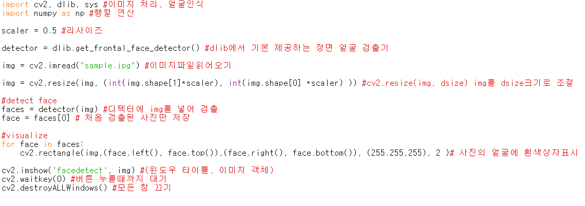
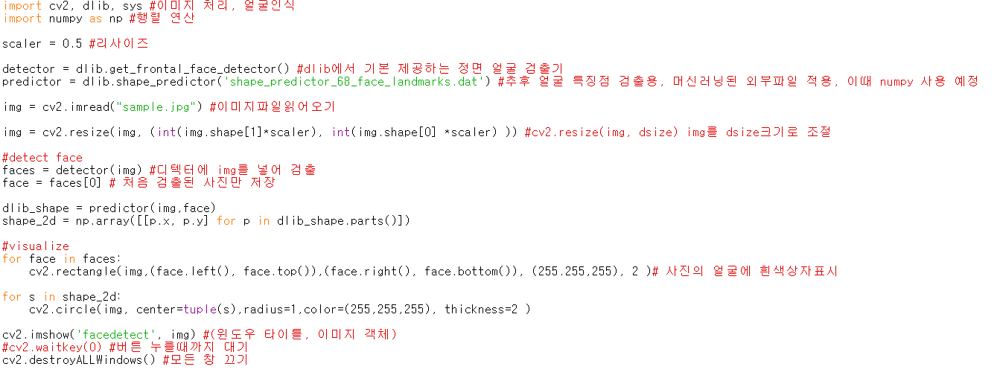

Portfolio
python을 이용한 얼굴 인식 프로그램
python을 이용해 얼굴 인식 및 필터 씌우기를 공부했습니다.
먼저 기능 구현을 위해 openCV와 dlib, numpy가 필요하니 설치합니다.
그 외에도 머신 러닝된 외부 얼굴 인식 파일을 다운로드, 샘플 사진을 준비하면 준비는 끝입니다.
그럼 먼저 python dlib 라이브러리의 기본 제공 정면 얼굴 검출기를 detecter로 사용합니다.
그 이후 openCV로 이미지 파일 로드, 이미지의 사이즈를 조정합니다.
이미지 파일을 detectoer에 넣고 검출된 얼굴의 좌상단과 우하단을 기준으로 상자를 사진에 출력하게 합니다.
먼저 기능 구현을 위해 openCV와 dlib, numpy가 필요하니 설치합니다.
그 외에도 머신 러닝된 외부 얼굴 인식 파일을 다운로드, 샘플 사진을 준비하면 준비는 끝입니다.
그럼 먼저 python dlib 라이브러리의 기본 제공 정면 얼굴 검출기를 detecter로 사용합니다.
그 이후 openCV로 이미지 파일 로드, 이미지의 사이즈를 조정합니다.
이미지 파일을 detectoer에 넣고 검출된 얼굴의 좌상단과 우하단을 기준으로 상자를 사진에 출력하게 합니다.

결과

얼굴이 정상적으로 검출이 됐으니 이제 얼굴의 특징점, 즉 눈,코,입을 검출해 보겠습니다.
이때는 머신 러닝된 외부 검출기 파일이 필요합니다. 머신러닝으로 검출기를 만드는 법은 추후 공부 예정 입니다.
검출기는 얼굴의 특징점을 검출, 튜플타입의 행렬형태로 좌표를 저장하니 이 지점마다 흰색 점이 출력 되도록 합니다.
이때는 머신 러닝된 외부 검출기 파일이 필요합니다. 머신러닝으로 검출기를 만드는 법은 추후 공부 예정 입니다.
검출기는 얼굴의 특징점을 검출, 튜플타입의 행렬형태로 좌표를 저장하니 이 지점마다 흰색 점이 출력 되도록 합니다.

결과